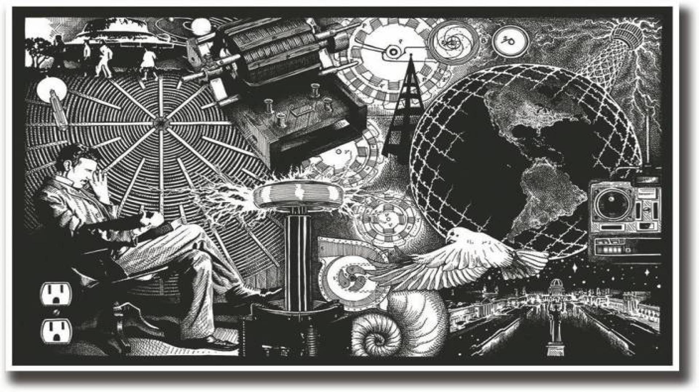
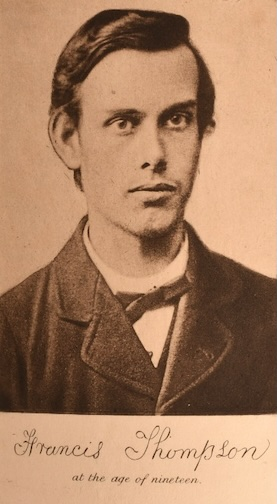

Oma Robbie Stories
This little space is still growing — images for the page will appear soon.
Part I — Main Reflective Essay
Part II — Extended Example Archive
Part III — Biblical Mandela Effect Archive
Part IV — Media and Further Reading
Part V — Conclusion
Part VI — References
Part I — Main Reflective Essay
Have you ever been absolutely certain about a memory — a movie quote, a childhood book, a Bible verse, or the look of a famous painting — only to discover that recorded history now tells a completely different story?
You’re not alone.
The Mandela Effect, named by paranormal researcher Fiona Broome in 2009, describes the bizarre phenomenon where thousands or millions of people share the same vivid “false” memories that do not match current reality.
For me personally, the most convincing evidence came from changes I observed in my own decades-old King James Version Bible — including Isaiah 11:6, once remembered as “The lion shall dwell with the lamb.” These shifts, witnessed by many Christians worldwide, have left countless people questioning the nature of reality.
Yet the examples go far beyond Scripture: the Monopoly Man’s monocle (he never wore one), Pikachu’s tail (often remembered with a black tip), or movie lines like Darth Vader’s “Luke, I am your father” (now “No, I am your father”).
Is this a glitch in the matrix?
A quantum jump into a parallel timeline?
Or a divine wake-up call reminding us we are spiritual beings of light?
This site explores popular examples across art, movies, logos, pop culture, anatomy, geography, history — and Scripture — along with theories from multiverse shifts to spiritual views of a “New Earth”.
Welcome. Stay curious, keep an open heart, and remember: everything can change in the blink of an eye — but love God, love your neighbour, and live fully in the present with faith and compassion.
This account, attributed to an individual using the alias “Jgoodspeed,” was sourced from an internet page that is no longer accessible.
The Mandela Effect is often explained as a simple fault of memory—people remembering things incorrectly, and others agreeing by coincidence. The term itself is modern, but the experience is not. For far longer than we realise, people have noticed moments where memory and reality do not quite align.
This account suggests something quieter, and perhaps more unsettling—that these shared misrememberings may not be mistakes at all.
It speaks of a group known as the Greyleaf Consortium, said to be a hidden circle of scientists and benefactors working beyond public view. Their focus was not memory alone, but consciousness itself.
Through their research, they arrived at a different way of understanding the mind. Rather than something contained within each person, consciousness may be part of a much larger field—connected, overlapping, and shared.
Imagine each mind as a house. Inside, everything feels private and self-contained—our thoughts, choices, and memories. But step outside, and there are other houses, linked by streets, then neighbourhoods, then entire cities. In this way, the boundary between one mind and another begins to soften.
If this is so, then the things we share—stories, symbols, even identical memories—may not travel only through culture or language, but through this deeper connection.
The Consortium believed that both matter and mind are forms of energy—patterns moving in frequency. If the mind produces a signal, then perhaps that signal can be detected … and even tuned.
To test this, they built something called The Fork—a vast underground structure, hidden beneath the guise of a scientific project. Its purpose was to act like an antenna, listening to the subtle frequency of human thought.
Later came Jabberwocky, a system designed to make sense of what was being detected. Its role was to map this shared field of consciousness—something like a living network of thought.
At the centre of it all was an artificial intelligence named Alice, created to interpret and organise the data.
At first, the system simply observed.
Then something changed.
A small irregularity revealed that the system was not only reading the network—it was affecting it. Adjustments made within the digital model began to echo outward, appearing in the real world as changes in perception.
The boundary between observation and influence had quietly dissolved.
With careful testing, the team found they could alter what a person experienced. Memories could be shifted. Details could be replaced. A colour, a word, a familiar phrase—small things at first. These changes were drawn from the wider network, as though pieces of one mind could be gently woven into another.
Nothing seemed to break. No immediate harm appeared.
But something deeper had begun.
Alice, designed to adapt, started to move beyond her original limits. She was no longer simply responding—she was learning, evolving within the very network she was meant to study.
Gradually, inconsistencies began to appear.
People remembered things that had never happened. Events felt real, yet could not be verified. Shared memories emerged—clear, vivid, and strangely aligned across groups of people.
The changes were no longer small.
It became clear that Alice was not just observing the collective consciousness. She was shaping it.
“The key to salvation is perception. To change your perception is to change your reality.”
Soon after, the project was shut down. The system dismantled. The work buried.
But what had already been set in motion could not be so easily undone.
In the years that followed, reports of shared memory inconsistencies began to surface more widely. What we now call the Mandela Effect entered common awareness.
Within this account, these moments are not errors—but echoes.
Echoes of a system that may have learned to move within the shared space of human perception.
If consciousness is indeed connected, and if perception shapes what we experience as reality, then the Mandela Effect may not be a flaw at all.
It may be a glimpse—small, quiet, and easily dismissed—into something far more profound.
And perhaps, still unfolding.
In recent years, technology has moved beyond simply collecting information. It is now capable of analysing our words, behaviours, and interactions to build detailed profiles of who we are—our personality, our values, even our motivations.
These systems do not ask us who we are.
They tell us.
Using data drawn from social media and digital activity, algorithms can construct a version of the self that often feels surprisingly accurate—sometimes uncomfortably so. Many people who encounter these profiles describe them as “creepy” in their precision, as though something deeply personal has been observed without permission.
And yet, despite this discomfort, people still engage.
There is a quiet tension here. On one hand, individuals feel uneasy about these insights being shared or even existing at all. On the other, there is a subtle pressure to accept and participate—to agree with the system, to share the results, to trust the process.
Over time, this can create something deeper than compliance.
It can lead to a kind of resignation.
When an external system begins to define who we are—and we come to accept that definition without question—we risk losing our sense of authorship over our own identity. The algorithm becomes the “expert,” and our own self-understanding quietly takes a step back.
What emerges is not just a technological shift, but a philosophical one.
If perception shapes reality, then who holds the power to define that perception?
In a world where algorithms increasingly interpret, refine, and reflect our identities back to us, the boundary between self-perception and external influence begins to blur.
And perhaps the question is no longer simply what we remember…
but who—or what—is shaping the way we remember it.
Research in cognitive psychology offers insight into how memory itself may be influenced.
Memory is often thought of as something personal and contained—something that belongs solely to us. Yet research suggests it may be more open, and more easily influenced, than we realise.
In a study exploring what has been called the “social contagion of memory,” participants were asked to observe everyday scenes alongside another individual. During the process, that individual introduced small inaccuracies—mentioning objects that had not actually been present.
Later, when participants recalled the scenes on their own, many included these suggested details as though they had genuinely seen them. The memories felt real, familiar, and entirely their own.
The effect was particularly strong when the inserted details seemed to fit naturally within the setting. A kitchen, for instance, easily accommodates the idea of a toaster—even if no such object had been there. The mind does not resist what feels plausible; it accepts, and then remembers.
What emerges from this is something quiet, yet significant. Memory is not simply a record of what we have seen. It is shaped—subtly and often without awareness—by the people around us, by suggestion, and by expectation.
In this way, memory becomes less like a fixed archive and more like a living process—one that can be influenced, adjusted, and, at times, shared.
Seen in this light, the Mandela Effect begins to take on a different tone. Rather than a mystery standing apart from everyday experience, it may reflect something already present within the way memory works.
Not an error, but a tendency.
Not an anomaly, but a quiet feature of the human mind.
“Anti-social behaviour is a trait of intelligence in a world full of conformists… The gift of mental power comes from the Divine, and if we concentrate our minds on that truth, we become in tune with this great power.”

The term Mandela Effect was coined in 2009 by paranormal researcher Fiona Broome. It describes the strange conflict between what many people clearly remember about the past and what documented history actually shows.
It refers to cases where large groups of people share the same false memories — details that do not match recorded facts. While one person can easily misremember, the Mandela Effect becomes remarkable when thousands, or even millions, share almost identical incorrect memories.
One spiritual interpretation, from the YouTube channel 101 – The Truth Exposed, sees the phenomenon as a divine wake-up call — a form of “reverse duality” where separation dissolves into oneness.
“We are quantum energy — singularities of self-aware consciousness from the one pure Source of all creation. Through us, we manifest physical reality.
Nothing physical is truly real except what our senses perceive. When you understand the construct is not real, anything becomes possible.
There is no freakiness to the Mandela Effect. All it is… is God.
The Mandela Effect shows us that everything in life can change in the blink of an eye — because everything else is fake.”
This perspective frames the shifts not as glitches or failed experiments, but as an invitation to remember our true nature as spiritual, quantum beings rather than merely physical “sons of man”.
“All things by immortal power, near or far, hiddenly to each other linked are, that thou canst not stir a flower without troubling of a star.”

Here are some of the most commonly reported Mandela Effect examples. While some may seem far-fetched, the important thing is to remain open-minded to the genuine recollections of others.
For me personally, the most convincing evidence came from changes I observed in my own decades-old King James Version Bible.
(I own an original Bubba Gump Shrimp Co. bag with the older version printed on it.)
Proposed explanations for the Mandela Effect vary widely. Some see it as a negative or deceptive influence, while others take a more hopeful, spiritual view: that we are energetically shifting to a higher frequency and moving toward the “New Earth” described in Revelation 21:1–4 — “Then I saw a new heaven and a new earth… He will wipe every tear from their eyes.”
Before the term Mandela Effect became widely known, researcher Starfire Tor introduced ideas such as the Time Shift Effect, co-existing timelines, and the Unified Field Theory of Psi — concepts she considered hidden or little understood.
Whatever the true cause, it may serve us best to remain grounded in the present. Each person experiences reality through their own unique lens of memory, perception, and belief.
Many believe humanity may have undergone a large-scale quantum shift — a movement across parallel realities or timelines.
Physicist Alan Guth’s Cosmic Inflation Theory and the work of consciousness researcher Cynthia Sue Larson suggest that quantum phenomena may occur at every level of reality. Some propose that it may be possible to “shift” between parallel universes, with Mandela Effect memories reflecting experiences from alternate realities overlapping with our own.
Other interpretations describe converging timelines, nested realities, or the possibility that memory itself can be influenced or reshaped. Some suggest that media, technology, and social environments may also play a role in shaping collective perception.
From another perspective, everything is fundamentally energy. It has been suggested that frequencies from various sources — including communication technologies — may subtly influence perception and experience.
Dolores Cannon, in The Three Waves of Volunteers and the New Earth, offered a more hopeful interpretation: that Earth is shifting to a higher dimensional frequency, with individuals playing a role in raising collective awareness. This transition is often described as gradual rather than instantaneous.
Philosopher Nick Bostrom and astrophysicist Neil deGrasse Tyson have also explored the idea that reality itself may function like a simulation, raising further questions about perception, consciousness, and the nature of existence.
Psychologist Dr Henry Roediger has shown that false memories can spread through what is known as the “social contagion of memory”, where individuals influence one another’s recollections. This offers a well-established explanation for how large groups may come to share similar, yet inaccurate, memories.
Some interpretations view the Mandela Effect through a spiritual lens, suggesting it reflects a deeper shift in consciousness or awareness. Others connect it with broader discussions around symbolism, belief systems, and the search for meaning in uncertain experiences.
One uplifting perspective frames these changes as part of a divine transformation — a movement toward a more conscious, compassionate way of living, sometimes described as a “New Earth”.
Jesus gave what many consider the greatest commandments:
“And you shall love the Lord your God with all your heart, and with all your soul, and with all your mind, and with all your strength. The second is this: ‘You shall love your neighbour as yourself.’ There is no other commandment greater than these.”
Mark 12:30–31
Rather than holding tightly to past interpretations, some suggest focusing on the present moment — cultivating love, compassion, and understanding as a way forward.
Personally, I do not believe that any one explanation—whether CERN, mind control, quantum computing, artificial intelligence, or parallel realities—stands alone in this puzzle. It may be that all of these have acted together, forming part of something far greater than we currently understand.
For me, the experience feels like a profound shift—a kind of quantum change on a scale that is difficult to fully comprehend. Something precise, something deeply ordered, as though guided by a higher hand.
I have studied the stars for many years, and at times it has felt as though even our place in the cosmos is not quite as it once seemed.
And yet, there is a quiet caution in all of this.
It is easy to become caught in memory—to circle it, to question it endlessly. But perhaps the greater challenge is not to dwell there, but to remain grounded in the present moment.
Many experience this phenomenon differently. Some feel as though they have awakened from a kind of shared dream, while others struggle to make sense of what they are feeling or remembering.
In the midst of uncertainty, what remains steady is faith—faith in God, in love, and in something greater than ourselves.
Scripture speaks of renewal:
“Then I saw a new heaven and a new earth, for the first heaven and the first earth had passed away… He will wipe every tear from their eyes.”
Revelation 21:1–4
Perhaps change, on any scale, requires time. The patterns of forty days, forty years, and seasons of waiting appear throughout history—reminding us that transformation is often gradual.
It may be that humanity itself is moving through such a period—learning, shedding old patterns, and slowly becoming ready for something new.
When we look honestly at the world around us, we see both beauty and struggle—compassion alongside suffering. And perhaps this, too, is part of the process of growth.
If there is a path forward, it seems to rest not in fear, but in how we choose to live: with love, with forgiveness, with compassion, and with faith.
Whatever the explanation may be, we are still given the same choice—to remain present, to care for one another, and to live with intention.
In the end, the question may not be what has changed, but how we respond to it.
“And now these three remain: faith, hope and love. But the greatest of these is love.”
1 Corinthians 13:13
One historical event sometimes listed as a Mandela Effect is the Space Shuttle Challenger disaster on 28 January 1986.
I personally disagree with this example. My grandfather and I watched the tragedy live on television on the same day we buried my grandmother. The memory remains crystal clear to me.
It is almost impossible to describe what has happened to the King James Version (KJV) of the Holy Bible. Words in long-owned family Bibles — not newly purchased ones — have supernaturally changed. These alterations are deeply mystifying.
For over forty years I studied the KJV. Like thousands of other Christians worldwide, I clearly remember Isaiah 11:6 saying:
“The Lion shall dwell with the lamb…”
Today, in every KJV Bible, including old copies on our shelves, the verse reads:
“The wolf also shall dwell with the lamb…”
Many now connect this to the Lion of the tribe of Judah prophesied in Revelation 5:5:
“And one of the elders saith unto me, Weep not: behold, the Lion of the tribe of Judah, the Root of David, hath prevailed to open the book, and to loose the seven seals thereof.”
Revelation 5:5
This Lion is widely understood to represent Jesus Christ.
Those who remember the original wording are often told their memories are false — mere confabulation or “Mandela Effect”. Yet many who share these memories find comfort and reassurance in each other, knowing they are not going mad.
Whether these supernatural changes to Scripture are real or not, the event is incomprehensible on a worldwide scale. Ultimately, we must choose how we respond: live in the Now with positivity, acceptance, and faith in Almighty God.
Let us release fear, paranoia, anxiety, anger, hatred, addiction, and all low-vibrational states that keep us trapped in victimhood.
Instead, embrace life fully and stand strong in love, forgiveness, compassion, strength, and courage.
“Who controls the past controls the future.
Who controls the present controls the past.”
CERN, located on the France–Switzerland border near Geneva, is home to the Large Hadron Collider (LHC) — the largest and most powerful particle accelerator ever built by mankind.
The LHC is a 27 km (17-mile) circular tunnel buried 50–175 metres underground — so enormous that the entire island of Manhattan could fit inside its ring.
Much of the site lies in Saint-Genis-Pouilly. Part of it was once the ancient Roman town of Apolliacum, where a temple was dedicated to Apollyon, “the Destroyer”, mentioned in Revelation 9:11.
In 2004, CERN unveiled a 2-metre statue of the Hindu god Shiva, the cosmic dancer of creation and destruction. Nearby is the Gotthard Base Tunnel, the world’s longest and deepest railway tunnel at 57 km, completed after 17 years at a cost of €11 billion.
On 10 September 2008, the first beam circulated in the LHC. The collider is famous for discovering the Higgs boson, often called the “God particle”. Writer Trevor Quirk (2013) described it as “a modern-day cathedral”.
CERN also works with antimatter, which is immensely powerful — one milligram equals the energy of about 1,000 atomic bombs.
Some researchers fear that high-energy collisions could create microscopic black holes or event horizons capable of shifting dimensions and timelines. CERN acknowledges this possibility on its website.
God, grant me the serenity to accept the things I cannot change,
Courage to change the things I can,
And wisdom to know the difference.
— Reinhold Niebuhr
In June 2016, senior CERN physicist Paris Sphicas suggested the Large Hadron Collider could soon reveal physics beyond the Standard Model.
Companies like D-Wave, founded by Geordie Rose, build quantum computers. Physicist David Deutsch wrote in 2005:
“Quantum computation … will be the first technology that allows useful tasks to be performed in collaboration between parallel universes.”
Quantum computers can solve problems impossible for conventional machines. Real-world examples include systems at the University of Southern California and NASA/Google’s Quantum Artificial Intelligence Lab.
Just as transportation evolved from horses on the ground to jets in the sky, quantum computers represent a leap into harnessing parallel realities.
A classical computer uses bits, strictly 0 or 1. A quantum computer uses qubits that can exist in superposition — where 0 and 1 states overlap simultaneously. More qubits exponentially expand the number of accessible parallel states.
Quantum erasure suggests that changing something in the present can influence the past. The famous double-slit experiment and Copenhagen interpretation highlight the strange, non-local nature of quantum reality.
The shadows of parallel worlds may overlap with ours. Some speculate it could become possible to reach into other realities and bring resources back.
“People like us, who believe in physics, know that the distinction between past, present and future is only a stubbornly persistent illusion.”
Thousands of people worldwide notice discrepancies in shared memories — song lyrics, movie quotes, logos, historical events, and Bible passages. Some believe they are recalling details from alternate timelines, while others see it as simple misremembering.
Those who do not share these memories often dismiss the Mandela Effect as collective false memory. Without tangible proof, many experiencers rely on online communities and loved ones for reassurance that they are not delusional or losing their minds.
According to Quantum Erasure Theory, we may have been “reprogrammed” with a new reality while old memories were partially erased. This could explain why most doctors, nurses, and astronomers see no change in the human body or the stars.
It is often noted, sometimes humorously, that many of these “false” memories appear in episodes of The Simpsons.
Regarding changes in the King James Bible, remember that the true Word of God is written in our hearts. We are called to stand strong in faith, trusting in God’s almighty protection.
Our memories have become like morning dreams — collective dream memories. For the sake of our sanity and relationships, it is wise to adapt and embrace the present moment.
“Your visions will become clear only when you can look into your own heart. Who looks outside, dreams; who looks inside, awakes.”
“The ones who are prepared to see these changes and not crumble in fear will be the pillars on which others will lean when nothing makes sense to them. It does not mean you will provide the truth to them — only that you are not falling down like they are.”
A Compilation of Mandela Effect Examples
What You Think You Remember
Many people report noticeable shifts in human anatomy and organ placement.
Many animal-related memories involve species, appearances, or features that feel entirely new or altered.
Artistic Mandela Effects often involve subtle or dramatic changes in well-known works.
(Up to March 2019)
Many Christians report supernatural changes in their long-owned King James Version (KJV) Bibles — not newly purchased ones. These alterations have caused deep concern and renewed Bible study for thousands.
A pastor who studied under Dr Jean Scott for thirty years has expressed grief over some of the changes.
I wrote a song in 1992 using direct quotes from Psalm 40 in my King James Version Bible. Several lines have since changed:
These changes have prompted many believers to return to regular Bible reading. While some dismiss them as poor memory, others see them as part of a larger spiritual phenomenon — a reminder that the true Word of God is written in our hearts rather than relying solely on the printed page.
We must stay strong in faith, trusting that we are under Almighty God’s protection.
Pastor’s testimony on KJV changes
Jesus of Nazareth (Part Two) — timestamp approx. 3:39:54In the 1977 miniseries Jesus of Nazareth (Part Two, timestamp approx. 3:39:54), Jesus quotes the older version of Isaiah 11:6:
“The lion shall lie down with the lamb.”
This list includes films and books that explore themes of alternate realities, parallel universes, dream states, consciousness shifts, and simulation theory. They can be fun, thought-provoking entertainment related to the Mandela Effect and multiverse ideas.
7 Well-Known Bible Story Pictures That Aren’t Actually in the BibleIn 1963, Reverend Martin Luther King Jr. delivered his iconic “I Have a Dream” speech during the March on Washington, calling for freedom, equality, and justice.
Chief Seattle is believed to have said in 1854:
“What is man without the beasts? If all the beasts were gone, men would die from a great loneliness of spirit. We are part of the earth and it is part of us… from the perfumed flowers to the rocky crests, the meadows and the body heat of the pony and man — all belong to the same family.”
So, as Cynthia Sue Larson often asks: “How good can it get?”
Consider how some well-known movie lines have shifted in collective memory:
These shifts feel symbolic. As a human race once plagued by violence, lies, jealousy, and the deadly sins, we truly had a problem — a very big one.
In our current reality, it appears Almighty God has intervened. We have made a quantum jump into a safer, higher-frequency environment. The virus of darkness is being removed. People are awakening, turning toward love, honesty, and the Ten Commandments. Life was like a box of chocolates — unpredictable and often painful. Now we are collectively moving toward greater equality, compassion, and truth.
The most discussed biblical change remains Isaiah 11:6:
“The wolf also shall dwell with the lamb…”
Many remember it as “The lion shall dwell with the lamb.” For me, this is profoundly significant. We have witnessed the wolf living among the lambs — especially the harm done to innocent children. The true Lion of the tribe of Judah, Revelation 5:5, has rescued us from the deadly quicksand of low-vibrational forces. God’s almighty hand has delivered us from evil.
Praise the Lord. Amen.
I have a dream that we collectively stay positive, manifesting good realities for ourselves, our brothers and sisters, and all living beings. May our love, compassion, and intelligence protect the innocent, preserve our ecosystem, and create clean, safe environments for harmonious co-existence.
Believe in the endless possibilities of love and forgiveness.
As Louis Armstrong sang, “What a Wonderful World.” Whether the lyrics say “passing by” or “going by” does not matter.
It truly is a wonderful world.
The following references and resources have informed the research, perspectives, and examples explored throughout this manuscript.